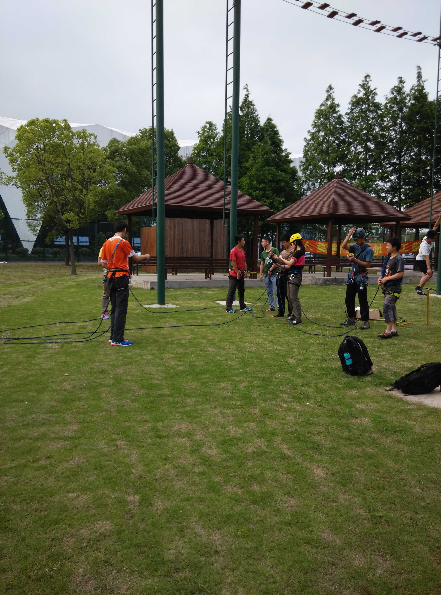

[转寄/推荐][转贴][删除][修改][设置可RE属性][上一篇][返回讨论区][下一篇][回文章][同主题列表][同主题阅读][从这里展开]
发信人: szzxczh (szzxczh), 信区: outdoor
标 题: 【暑期登山队】技术培训0524
发信站: 饮水思源 (2015年05月25日23:15:31 星期一)
培训地点：光体岩壁
培训内容：结组行进和制动（阿冰晓远高神先补训了上周的上升和下降）
先讲了制动，感觉和冬训的时候讲的基本一样，关于行走的时候行走稿尖有一些争论，最
后的结论是在滑坠风险小的地方镐尖向前，在比较陡有较大滑坠风险的地方镐尖向后随时
准备制动？另外，突然想到了一个问题，到时候行走稿需不需要用扁带或者什么别的和身
体连着防止掉了。。
然后是结组行进，工程蝴蝶的长度要大于15cm，行进过程中行走稿和路绳在异侧。结组过
程中前后两人的速度要尽量保持一致，绳子的状态差不多是拖在地上，行走过程中有人倒
下时，倒下的人要立即大声喊叫，然后所有人作出制动姿势。（在草坪上呈现这个场景真
是蠢得令人不忍直视。。。）
==============================================================================
练完结组行进大家去攀岩，第一次看见高神攀岩啊！！！高神先向大屋檐进发，不幸在第
三块版脱落，然后开始抱石，轻松爬过蓝线~~最后又开始爬第二道，爬到第五块板力竭（
神一般的表情已经成了群头像了~），下来以后愤愤不平地说：“我当年可是flash过这条
线的！！”【果然是这两年肌肉练得太发达变重了么。。。
【结组行进的视频在网盘里】
 screen.width - 200){this.width = screen.width - 200}">
|
[转寄/推荐][转贴][删除][修改][设置可RE属性][上一篇][返回讨论区][下一篇][回文章][同主题列表][同主题阅读][从这里展开]